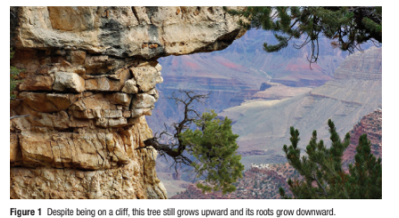

The tree growing from a cliff shown in Figure 1 seems to be defying gravity. However, its growth and development are, in fact, responding to gravity. It is vitally important for all plants to be able to grow in the correct orientation, so that the shoot grows toward sunlight and the roots grow down into the soil. In this section you will explore how plants can modify their development in response to the environment.
